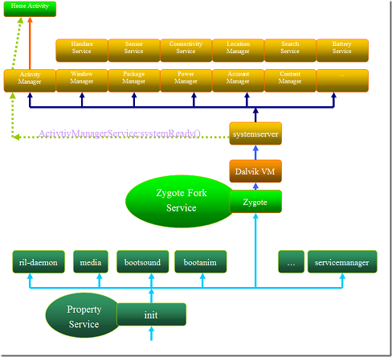
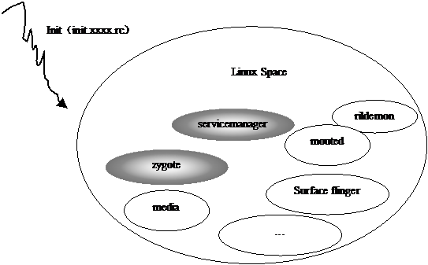

Android Startup process
Table of Contents
1 Android 核心分析 之八——Android 启动过程详解
Android从Linux系统启动有4个步骤；
- init进程启动
- Native服务启动
- System Server，Android服务启动
- Home启动
总体启动框架图如：

1.1 第一步：initial进程(system/core/init)
init进程，它是一个由内核启动的用户级进程。内核自行启动（已经被载入内存，开始运行，并已初始化所有的设
备驱动程序和数据结构等）之后，就通过启动一个用户级程序init的方式，完成引导进程。init始终是第一个进程.
Init进程一起来就根据init.rc和init.xxx.rc脚本文件建立了几个基本的服务：

- servicemanamger
- zygote
- 。。。
最后Init并不退出，而是担当起property service的功能。
1.1.1 脚本文件
init@System/Core/Init
Init.c： parse_config_file(Init.rc)
@parse_config_file(Init.marvel.rc)
解析脚本文件：Init.rc和Init.xxxx.rc(硬件平台相关)
Init.rc是Android自己规定的初始化脚本(Android Init Language, System/Core/Init/readme.txt)
该脚本包含四个类型的声明：
Actions
Commands
Services
Options.
1.1.2 服务启动机制
我们来看看Init是这样解析.rc文件开启服务的。
- 打开.rc文件，解析文件内容@ system/core/init/init.c, 将service信息放置到service_list中。@
system/core/init parser.c, restart_service()@ system/core/init/init.c, service_start execve(…).建
立service进程。 - Zygote: Servicemanager和zygote进程就奠定了Android的基础。Zygote这个进程起来才会建立起真正的
Android运行空间，初始化建立的Service都是Navtive service.在.rc脚本文件中zygote的描述：service
zygote /system/bin/app_process -Xzygote /system/bin –zygote –start-system-server 所以Zygote从
main(…)@frameworks/base/cmds/app_main.cpp开始。main(…)@frameworks/base/cmds/app_main.cpp 建立Java
Runtime: runtime.start("com.android.internal.os.ZygoteInit", startSystemServer);
runtime.start@AndroidRuntime.cpp 建立虚拟机运行：com.android.internal.os.ZygoteInit：main函数;
main()@com.android.internal.os.ZygoteInit, 正真的Zygote; registerZygoteSocket(); 登记Listen端口
startSystemServer(), 进入Zygote服务框架。经过这几个步骤，Zygote就建立好了，利用Socket通讯，接收
ActivityManangerService的请求，Fork应用程序。 - System Server startSystemServer@com.android.internal.os.ZygoteInit在Zygote上fork了一个进程:
com.android.server.SystemServer.于是SystemServer@(SystemServer.java）就建立了。Android的所有服务
循环框架都是建立SystemServer@(SystemServer.java）上。在SystemServer.java中看不到循环结构，只是可
以看到建立了init2的实现函数，建立了一大堆服务，并AddService到service Manager。
main() @ com/android/server/SystemServer { init1(); }
Init1()是在Native空间实现的（com_andoird_server_systemServer.cpp）。我们一看这个函数就知道了，
init1->system_init() @System_init.cpp 在system_init()我们看到了循环闭合管理框架。
{ Call "com/android/server/SystemServer", "init2" ….. ProcessState::self()->startThreadPool(); IPCThreadState::self()->joinThreadPool(); }
init2()@SystemServer.java中建立了Android中所有要用到的服务。这个init2（）建立了一个线程，来New Service和AddService来建立服务
- Home启动: 在ServerThread@SystemServer.java后半段，我们可以看到系统在启动完所有的Android服务后，做了这样一些动作：
- 使用xxx.systemReady()通知各个服务，系统已经就绪。
- 特别对于ActivityManagerService.systemReady(回调)
- Widget.wallpaper,imm(输入法)等ready通知。
Home就是在ActivityManagerService.systemReady()通知的过程中建立的。下面是
ActivityManagerService.systemReady()的伪代码：
systemReady()@ActivityManagerService.java
resumeTopActivityLocked()
startHomeActivityLocked();//如果是第一个则启动HomeActivity。
startActivityLocked（。。。）CATEGORY_HOME